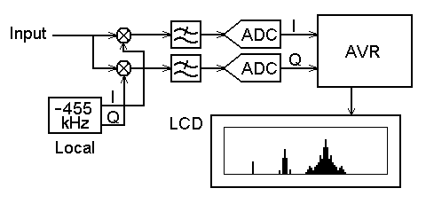

ラジオ・スペクトラム・モニタ
2005. 10. 17

2005. 10. 17

前回のオーディオ・スペクトラム・モニタの続きとして、今回はラジオ帯域のスペクトラムを覗いてみる実験です。スペクトラム解析には前回と同じくAVRマイコンによるFFT処理を使用します。単純に考えるとRF信号を直接サンプリングして解析すれば良いように思えますが、次のような理由から非現実的であることが分かります。
これを解決するのに一般的な手段として、周波数変換という方法があります。要はミキサ（乗算器）で低い周波数にダウンコンバージョンしてからサンプリングするのです。このとき、複素信号として処理すると負の周波数が扱えるため、イメージの影響なしに中心周波数を0Hzまで持ってこられます。これならサンプリング周波数はスパン周波数以上あればよいことになります。100MHz±1MHzの範囲を見たければ100MHzダウンで0±1MHzの範囲に変換して2Mspsで済むといった感じです。見たいバンドだけ切り取ってくるというと分かりやすいでしょうか。実は、この手のラジオ・スペクトラム・モニタは市販されていたりします。
今回はAMラジオのミキサ出力からIF信号（fC=455kHz）を取り出してきて、これを入力信号としてみました。チューニングはラジオのダイヤルで行います。このIF信号をさらに0Hzに変換しますが、複素信号として処理するため、ミキサや局発などを全て複素信号に対応した構成とします。複素信号は電気回路上では2線のIQ信号によって表現され、実部→I(in-phase)信号、虚部→Q(quadrature-phase)信号にそれぞれ対応しています。IQ信号の演算回路にも複素数の数式がそのまま適用され、たとえばミキシングなら (a1+jb1)(a2+jb2) = (a1a2-b1b2)+j(a1b2+a2b1) となり、図のように4個の乗算器が必要になります。

このように複素信号のアナログ処理は回路規模が大きくなるので、最低限のアナログ処理が済んだらさっさとデジタイズして以降デジタル処理とするのが普通です。今回の場合は一方が実信号なので、乗算器が2個で済みます。ところで、実信号を複素信号として見ると正と負が対称なスペクトラムになっています。実信号は虚部が常にゼロであるといえますが、複素信号がそうなる条件は全ての複素周波数成分について複素共役（虚部の符号が逆、つまり周波数の符号が逆）な成分が存在するときです。これにより、鏡像反転したスペクトラムになるのです。
以上のような条件で作成したブロック図を右に示します。ラジオから取り出したIF信号をInput信号とし、それに複素ローカル信号（-455kHz）をかけ合わせてIQ信号が生成されます。不要な周波数成分はLPFで取り除いてA-D変換し、それ以降はAVRマイコンでデジタル処理します。このブロック図を見てピンと来る人も多いかと思います。そう、デジタル通信ICの中でよく見られる処理そのものですね。この複素信号での解析や変復調処理というのは、現在のデジタル通信において最も基本的な技術となっています。
で、これがラジオ・スペクトラム・モニタの回路図です。回路の要となるミキサにはPhilipsの汎用DBM IC SA612Aを使用しました。DBM自体はIC内部で多く使われていますが、単体のDBM ICというのは限られてきます。これ以外には、いにしえのMC1496 (MOT)や最近登場したNJM2594 (NJR)があり、どれもDigi-Keyで入手可能です。SA612Aを選んだ理由は、差動入出力で、外付け部品も不要という点からです。また、今回は出力をDC結合で使うため、オフセット・ドリフトの少ない差動出力の方が都合がよいです。このほか、精度の保証されたアナログ乗算器もいくつかありますが、とても高価です。ローカル信号はC-MOSインバータのLC発振で、移相回路で互いに直角なIQ信号を生成してミキサに入力します。LPFには手持ちのMAX295を使用しましたが、ロールオフが緩やかなのでエイリアシングが少し気になりました。切れのシャープなMAX297の方が良いと思います。A-D変換部ではIQ信号を同時サンプリングする必要があります。AVR内蔵のADCは全チャネルで1個のS&Hを共有しているので、同時サンプリングはできません。このため、内蔵ADCを諦めてNSの12bit ADC ADCS7476を2個使いしています。LCDモジュールは例のジャンクLCDを活用してみました。秋月のグラフィックLCDも同様に使えるはずです。
IQ信号をサンプリングしてFFTした結果をLCDに表示するだけです。表示更新頻度は毎秒60回程度になります。とりあえず64kspsで128サンプル取り込んでいるので、ローカル周波数を中心とした±32kHzの範囲が500Hzの分解能で観測できます。現在のところ周波数の目盛は固定ですが、ラジオの局発を取り出してカウントしてやれば、スペクトラム表示に実際の周波数を振ることもできるでしょう...ということに、これを書いているときに気づいて急遽実装(^_^;。局発入力があるときはLCD上に目盛りが現れ、チューニング・ダイヤルと連動します。
FFTルーチンは、オーディオ・スペクトラム・モニタに使ったものをそのまま流用しています。FFTアルゴリズムは元々複素入力なので、実入力用に最適化されていない限りそのまま複素信号の処理に使用できるのです。実入力では出力の正負が同じになるので半分しか使いませんでしたが、複素入力では出力の正負それぞれが有効データになります。
電源を投入すると、最初にメニュー画面が現れて動作条件を設定できます。ジョイスティックの上下方向で項目を選択し、右で変更、プッシュで動作を開始します。動作中は、上方向で表示のホールド/解除、下方向でピークホールドのリセット、左方向で自動NULL動作の再実行（ADC入力のDCオフセット・キャンセル）、プッシュでメニューに戻ります。窓関数も切り替えられるので、比べてみるとそれぞれの特徴がよく分かるでしょう。また、IQ信号の生の波形を表示するモードもありますが、これはあまり意味はないと思います。
まず、ローカル周波数が455kHzになるようにTC1を調整します。次に入力信号に455+10kHz,100mVP-Pの正弦波を入力して、ADC入力部でIQ信号のレベルが揃いかつ位相差が90°になるようにVR1,VR2を調整します。このときDCレベルがVcc/2（多少オフセットしていても良い）になっていて波形に歪みが無いか確認しておきます。そして、スペクトラム表示してみて中央から20bin右の位置にスペクトルが立っていれば成功です。反対側にイメージが出ているときはVR1,VR2を微調整して消します。スタート時に中央に立っている0Hz成分は、ADC入力のDCオフセットによるもので、自動NULL機能により数秒後に消えます。
入力信号のソースとして、適当なAMラジオを用意してミキサ出力と局発出力（無くても良い）をバッファして取り出せるように改造します。トランジスタ・ラジオならエミッタ注入でしょうから、ミキサ出力には局発成分（受信周波数+455kHz）が盛大に漏れてきます。これはDBMのダイナミックレンジを極端に狭めてしまうので、そのような場合は、LPFでIF帯以上を十分減衰させておきます。PLL方式に多いIFが450kHzのラジオを使う場合は、このページの中の455kHzを450kHzに読み替えてください。


{kind=link}
{kind=link}
{kind=link}